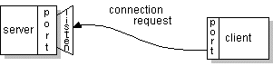
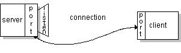

Normally, a server runs on a specific computer and has a socket that is bound to a specific port number. The server just waits, listening to the socket for a client to make a connection request.On the client-side: The client knows the hostname of the machine on which the server is running and the port number on which the server is listening. To make a connection request, the client tries to rendezvous with the server on the server's machine and port. The client also needs to identify itself to the server so it binds to a local port number that it will use during this connection. This is usually assigned by the system.
 If everything goes well, the server accepts the connection. Upon acceptance, the server gets a new socket bound to the same local port and also has its remote endpoint set to the address and port of the client. It needs a new socket so that it can continue to listen to the original socket for connection requests while tending to the needs of the connected client. On the client side, if the connection is accepted, a socket is successfully created and the client can use the socket to communicate with the server.The client and server can now communicate by writing to or reading from their sockets.
Definition: A socket is one endpoint of a two-way communication link between two programs running on the network. A socket is bound to a port number so that the TCP layer can identify the application that data is destined to be sent.An endpoint is a combination of an IP address and a port number. Every TCP connection can be uniquely identified by its two endpoints. That way you can have multiple connections between your host and the server.
The
java.netpackage in the Java platform provides a class,Socket, that implements one side of a two-way connection between your Java program and another program on the network. TheSocketclass sits on top of a platform-dependent implementation, hiding the details of any particular system from your Java program. By using thejava.net.Socketclass instead of relying on native code, your Java programs can communicate over the network in a platform-independent fashion.Additionally,
java.netincludes theServerSocketclass, which implements a socket that servers can use to listen for and accept connections to clients. This lesson shows you how to use theSocketandServerSocketclasses.If you are trying to connect to the Web, the
URLclass and related classes (URLConnection,URLEncoder) are probably more appropriate than the socket classes. In fact, URLs are a relatively high-level connection to the Web and use sockets as part of the underlying implementation. See Working with URLs for information about connecting to the Web via URLs.